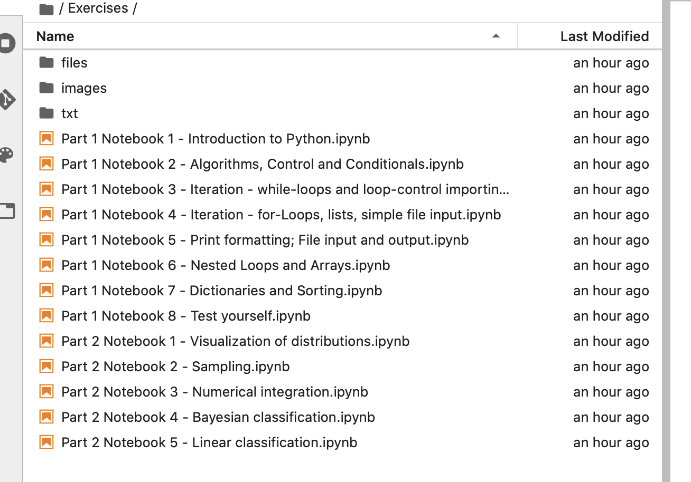

Introduction to Python
This site gives details on how to access the Introduction to Python material that has been designed for students of The University of Sheffield's Data Analytics MSc. The material is designed for you to work through in your own time before you start with us at Sheffield.
Jupyter notebooks on Microsoft Azure Cloud
The course materials are delivered as Jupyter Notebooks which is a literate computing platform that is widely used in data science. Computer power is provided by Microsoft Azure Cloud so you do not need to install anything on your own machine. All you need is a web broswer and a free acount on https://notebooks.azure.com/.
To access the material:
- Create a Microsoft Azure Notebooks account. Head to the website and click on sign-in (upper right corner). Use your email address and set a password.
- Make sure you are logged into your account. It will initally be empty.
- Click on the notebook library you wish to access from the list further down this page.
- Click on Clone and follow the on screen directions. This copies the notebooks to your account.
- Click on a notebook file in the list. This will start a notebook server and allow you to work through the material


Notebook libraries containing the course material
- Introduction to Python - for complete beginners.
- Solutions to 'Introduction to Python'